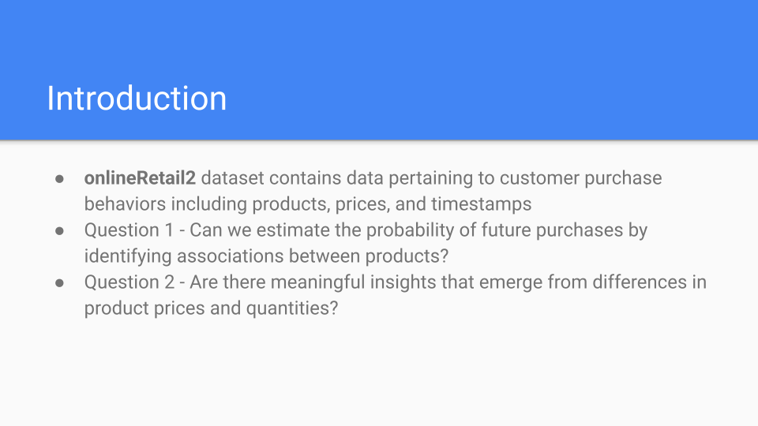

E-Commerce Market Analysis and Product Clustering for Retail Inventory Optimization
Data Mining | Market-Basket Analysis | Unsupervised Learning | Inventory Control
Project Overview
An exploratory data mining and market analysis initiative conducted on the UC Irvine onlineRetail2 transactional database (~400K cleaned rows). The investigation models customer purchasing behavior, extracts co-occurrence rules across 18,536 unique invoice baskets, and leverages NLP text clustering to optimize retail inventory control, product bundling, and seasonal sales strategies.
Key Methodologies & Technical Pillars
- Dataset Diagnostics & Preprocessing: Audited 540K+ raw records, filtering null values and negative volume entries to create a clean 397,925-row transactional matrix for revenue profiling across global markets.
- Market-Basket Association Rules (Apriori Algorithm): Consolidated item lines into invoice baskets to surface affinity metrics (support, confidence, conviction), identifying product complementary patterns and binned quantity intensity behaviors.
- TF-IDF & K-Means Inventory Clustering: Vectorized item descriptions into a 2,031-term TF-IDF feature space, using
scikit-learnK-means clustering to segment inventory into 5 distinct thematic product categories.
Interactive Presentation Deck
Use the arrows below to flip through the project slide deck:




Project Deliverables
Access the full analytical report detailing the Apriori rule configurations, TF-IDF cluster breakdowns, and strategic business recommendations: